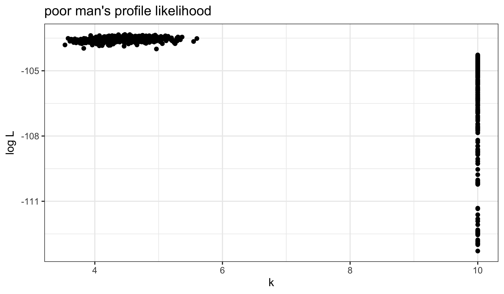
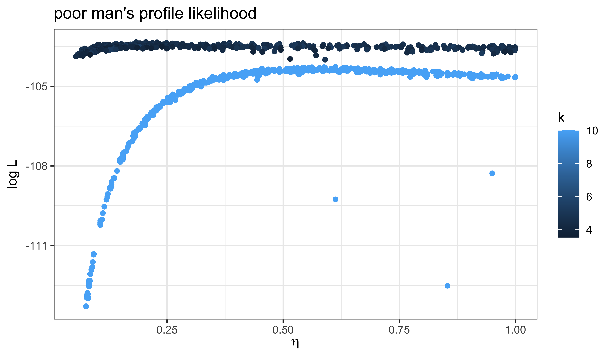
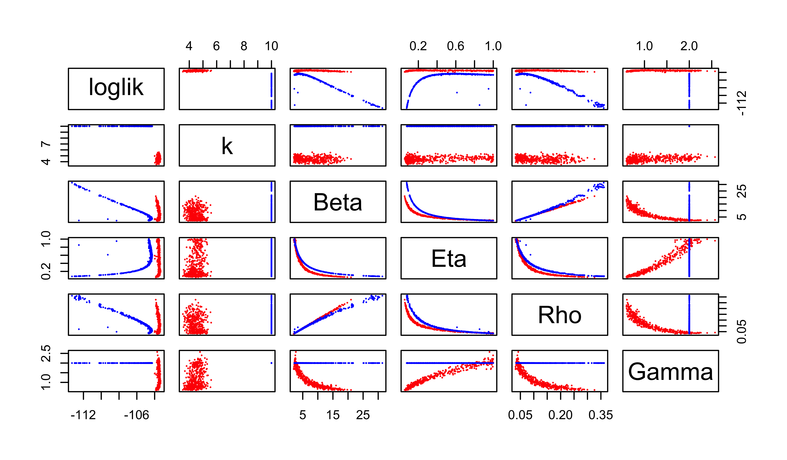

library(tidyverse)
library(pomp)
library(iterators)
library(doFuture)
plan(multisession)
source("model_measSIR.R")
read_csv("measles_params.csv") |>
filter(!is.na(loglik), loglik.se<1) |>
filter(loglik==max(loglik)) |>
select(-loglik,-loglik.se) -> coef(measSIR)Exercise: Fitting all parameters of the SIR model
Exercise
In all of the foregoing, we have assumed a fixed value of the dispersion parameter \(k\), of the negative binomial measurement model. We’ve also fixed one or the other of \(\gamma\), \(\eta\). Now attempt to estimate all the parameters simultaneously. How much is the fit improved?
Solution
Setup
First, we set up the problem, loading packages, initializing a parallel environment, constructing our SIR model, and identifying the putative MLE. The pomp constructed by the source command below is named measSIR. We take for our putative MLE the point in our database with the highest measured likelihood.
The putative MLE is
| 3.63 |
| 2.00 |
| 0.0557 |
| 10.0 |
| 0.613 |
| 38000 |
Local search
We’ll begin, as in the Lesson, by performing a local search with only \(N\) fixed. The purpose of this is to evaluate the performance of the search algorithm, so that we can tune the algorithm’s parameters.
Windows users, beware! The following triggers a C snippet compilation within a parallel block, which will not succeed on many Windows machines. See this discussion for an explanation of how to circumvent this problem.
foreach(i=1:8,.combine=c,
.options.future=list(seed=482942941)
) %dofuture% {
library(tidyverse)
library(pomp)
measSIR |>
mif2(
Np=2000, Nmif=40,
cooling.fraction.50=0.5,
rw.sd=rw_sd(Beta=0.02, Rho=0.02, Gamma=0.02, k=0.02, Eta=ivp(0.05)),
partrans=parameter_trans(log=c("Beta","k","Gamma"),logit=c("Rho","Eta")),
paramnames=c("Beta","Rho","k","Eta","Gamma")
)
} -> mifs_localWe examine the traces of the IF2 runs:
mifs_local |>
traces() |>
melt() |>
filter(name != "N") |>
ggplot(aes(x=iteration,y=value,group=.L1,color=factor(.L1)))+
geom_line()+
guides(color="none")+
facet_wrap(~name,scales="free_y")IF2 seems to be doing a reasonable job of increasing the likelihood, though there is some way yet to go. We note that \(k\) is immediately decreased, giving the model more measurement error, with which to explain discrepancies between the process model and the data. Of course, to maximize the likelihood, \(k\) should be as large as possible. It will be interesting to see what happens to the other parameters as IF2 tries to increase \(k\).
We now evaluate the log likelihood at each of the resulting points.
foreach(mf=mifs_local,.combine=rbind,
.options.future=list(seed=908222057)
) %dofuture% {
library(tidyverse)
library(pomp)
evals <- replicate(10, logLik(pfilter(mf,Np=2000)))
ll <- logmeanexp(evals,se=TRUE)
mf |> coef() |> bind_rows() |>
bind_cols(loglik=ll[1],loglik.se=ll[2])
} -> resultsThe above calculations took a total of 11 s on 10 cpus. What do they show us?
pairs(~loglik+k+Beta+Eta+Rho+Gamma,data=results,pch=16)As usual, we store these results in a database.
read_csv("measles_params.csv") |>
bind_rows(results) |>
arrange(-loglik) |>
write_csv("fitall_params.csv")Now we attempt a global search of the \(k\)-\(\beta\)-\(\rho\)-\(\eta\)-\(gamma\) space.
We set up a design of starting points. The freeze command is described here.
freeze(
runif_design(
lower=c(Beta=5,Rho=0.2,Eta=0,k=1,Gamma=0.5),
upper=c(Beta=80,Rho=0.9,Eta=1,k=30,Gamma=2),
nseq=500
),
seed=2062379496
) -> guessesWe will use one of our ‘mif2d_pomp’ objects in the following. We fix \(N\) and \(\gamma\).
mf1 <- mifs_local[[1]]
fixed_params <- coef(measSIR,c("N"))The following may look somewhat familar.
foreach(guess=iter(guesses,"row"), .combine=rbind,
.options.future=list(seed=274481374)
) %dofuture% {
library(tidyverse)
library(pomp)
mf1 |>
mif2(
Nmif=100,Np=2000,
params=c(unlist(guess),fixed_params)
) |>
mif2(Nmif=100) |>
mif2(Nmif=100) -> mf
replicate(
10,
mf |> pfilter(Np=2000) |> logLik()
) |>
logmeanexp(se=TRUE) -> ll
mf |> coef() |> bind_rows() |>
bind_cols(loglik=ll[1],loglik.se=ll[2])
} -> resultsThis global search from 500 starts took 2100 s on 10 cpus. We append the results to our database and have a look.
read_csv("fitall_params.csv") |>
bind_rows(results) |>
filter(is.finite(loglik)) |>
arrange(-loglik) |>
write_csv("fitall_params.csv")
results |>
filter(is.finite(loglik)) |>
filter(loglik>max(loglik)-50) |>
bind_rows(guesses) |>
mutate(type=if_else(is.na(loglik),"guess","result")) |>
arrange(type) -> all
pairs(~loglik+k+Beta+Eta+Rho+Gamma, data=all, pch=16, cex=0.3,
col=ifelse(all$type=="guess",grey(0.5),"red"))read_csv("fitall_params.csv") |>
filter(loglik>max(loglik)-50) -> all
all |>
filter(loglik>max(loglik)-10) |>
ggplot(aes(x=k,y=loglik))+
geom_point()+
labs(
x=expression(k),
y=expression(log~L),
title="poor man's profile likelihood"
)
all |>
filter(loglik>max(loglik)-10) |>
ggplot(aes(x=Eta,y=loglik,color=k))+
geom_point()+
labs(
x=expression(eta),
y=expression(log~L),
title="poor man's profile likelihood"
)
It does appear that our global search has improved the likelihood, at least in part by reducing \(k\). That is, by increasing the measurement error.
Perhaps unsurprisingly, these poor-man’s profiles suggest there is a very flat ridge in the surface. We can see some of the tradeoffs involved with a scatterplot matrix. In the following, the results of our earlier fitting (where \(k=10\)) are in blue; the new results are in red.
pairs(~loglik+k+Beta+Eta+Rho+Gamma, pch=16, cex=0.3,
data=filter(all,loglik>max(loglik)-10),
col=ifelse(round(all$k,2)==10,"blue","red"))
A profile calculation
Because this ridge appears flat in the \(\eta\)-direction, we will profile over \(\eta\) to improve our estimates. The following sets up a design of guesses, to be used as starting points for the profile computation.
read_csv("fitall_params.csv") |>
filter(loglik>max(loglik)-10,loglik.se<1) |>
sapply(range) -> box
freeze(
profile_design(
Eta=seq(0.01,0.99,length=40),
lower=box[1,c("Beta","Rho","k","Gamma")],
upper=box[2,c("Beta","Rho","k","Gamma")],
nprof=25, type="runif"
),
seed=1893696051
)-> guessesforeach(guess=iter(guesses,"row"), .combine=rbind,
.options.future=list(seed=830007657)
) %dofuture% {
library(tidyverse)
library(pomp)
mf1 |>
mif2(
Nmif=100,Np=2000,
params=c(unlist(guess),fixed_params),
rw.sd=rw_sd(Beta=0.02, Rho=0.02, Gamma=0.02, k=0.02),
partrans=parameter_trans(log=c("Beta","Gamma","k"),logit="Rho"),
paramnames=c("Beta","Gamma","k","Rho")
) |>
mif2(Nmif=100,cooling.fraction.50=0.3) -> mf
replicate(
10,
mf |> pfilter(Np=2000) |> logLik()
) |> logmeanexp(se=TRUE) -> ll
mf |> coef() |> bind_rows() |>
bind_cols(loglik=ll[1],loglik.se=ll[2])
} -> resultsThis profile calculation used about \(180\) cpu s per start.
We now examine the profile traces. Note that we include a trace of the basic reproductive number, \(R_0\).
results |>
filter(
is.finite(loglik),
loglik.se<1
) |>
group_by(Eta) |>
filter(rank(-loglik)<=2) |>
ungroup() |>
reframe(
Eta=Eta,
`log~L`=loglik,
`R[0]`=Beta/Gamma,
beta=Beta,
Gamma=Gamma,
k=k,
Rho=Rho
) |>
pivot_longer(-`Eta`) |>
ggplot(aes(x=`Eta`,y=value))+
geom_point()+
labs(y=NULL,x=expression(eta))+
facet_wrap(~name,scales="free_y",labeller=label_parsed)
Conclusions
Releasing all constraints on the parameters results in only a small improvement in the log likelihood. Indeed, by AIC, the improvement is not judged to be worthwhile. Nevertheless, removing the constraints allows us to evaluate whether our assumptions about known values of certain parameters play a role in the conclusions. In the event, they were not playing much of a role.
Let us return to the central question: How does the model account for the data?
Clearly, the model can account for the data equally well for all but the smallest values of \(\eta\). That is, unless the fraction of susceptibles in the population was too small to allow for an outbreak of the observed size, one can obtain an outbreak that looks like the observed one from an SIR model in a population of sufficient size. This interpretation is confirmed by the fact that, as one decreases \(\eta\), one has to increase the reporting efficiency \(\rho\) to explain the data.
Now, across the confidence interval for \(\eta\), say \((0.054, 1)\), it is clear from the profile trace plots above, that the model needs both \(\beta\) and \(\rho\) to be relatively low and the infectious period to be relatively short (though average infectious periods of as long as \(1.7\) wk are within the confidence interval).
In sum, the model is accounting for the data by saying there was a large and mostly unobserved outbreak in the population, very many of whom were susceptible. As we discussed in the Lesson, the conclusion of a short infectious period is broadly compatible with household studies that suggest the duration of viral shedding is less than a week. On the other hand, the conclusion that \(\rho<0.33\) is more difficult to reconcile with our understanding of measles reporting during this period. Indeed, it would have had to be the case that 1948 was a very sloppy year for the public health authorities in this part of England, since their average reporting efficiency, as we estimated in the Lesson was close to 60%.